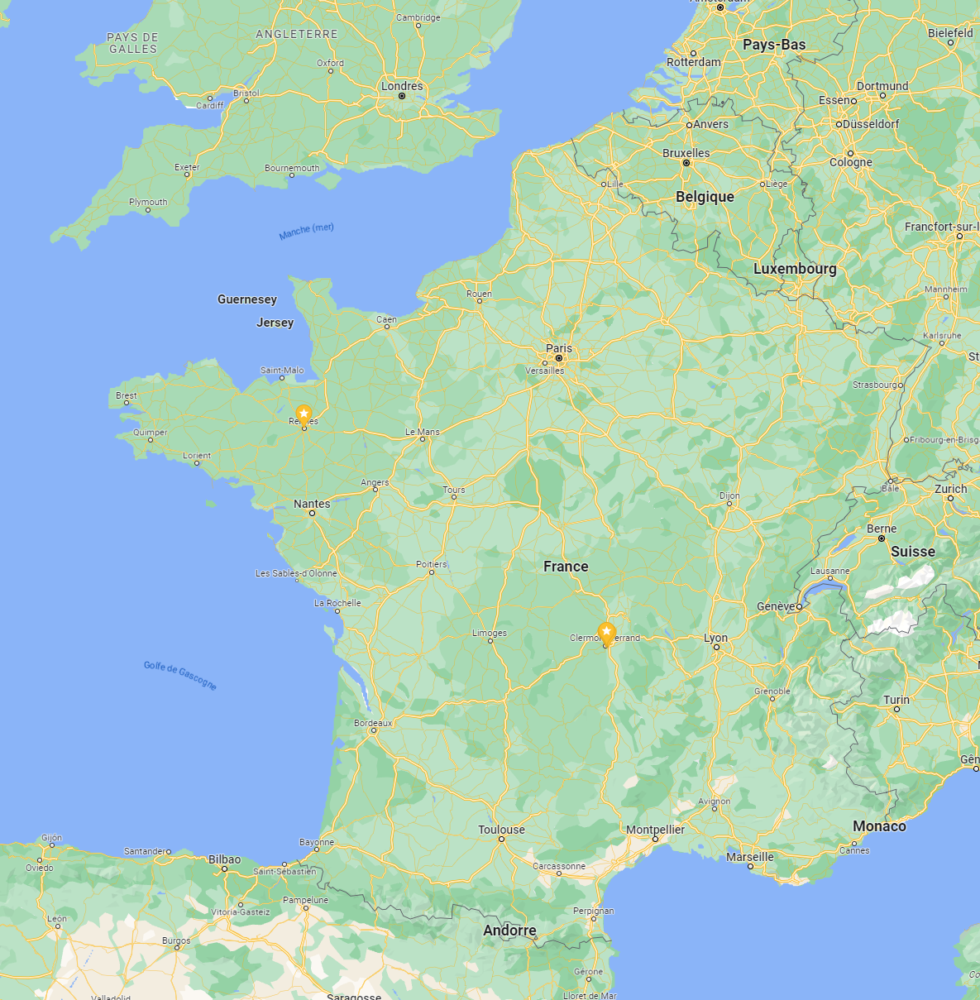

<app-toolbar>
    <div class="center_toolbar">
        <input type="text" placeholder="Rechercher une ville...">
      </div>
</app-toolbar>
<div>
    
    <button [routerLink]="['/map/clermont-ferrand']" mat-mini-fab class="market_indicator">
        <span>5</span>
    </button>
</div>